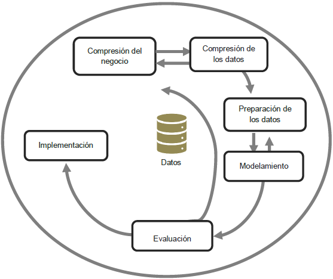

Metodología KDD (Knowledge Discovery in Databases)
Metodología KDD

- Selección: Se seleccionan los datos relevantes para el problema de clasificación.
- Preprocesamiento: Se llevan a cabo tareas de limpieza, transformación y reducción de datos.
- Transformación: Los datos se transforman en una forma más adecuada para su análisis y modelado.
- Implementación del modelo: Una descripción de cómo se implementó el modelo de aprendizaje automático, incluyendo los pasos específicos seguidos y cualquier configuración o ajuste realizado.
- Evaluación: Se evalúa el rendimiento de los modelos utilizando métricas apropiadas y técnicas de validación.
- Interpretación: Se interpretan los resultados del modelo y se extrae conocimiento útil.
- Utilización: Se utiliza el conocimiento extraído para la toma de decisiones y acciones en el contexto del problema de clasificación.